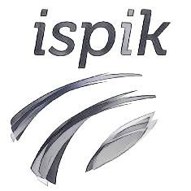

Broncel Błażej
Krótka prezentacja o sobie

Broncel Błażej
Adres zamieszkania:
41-100 Gliwice
Kochanowskiego 37
Adres pochodzenia:
43-100 Tychy
Zelwerowicza 14a
Data urodzenia: 25.05.1994r.
Telefon: 792 535 551
E-mail: blabro@o2.pl

Doświadczenie:
Praktykant
ISPIK S.A.: praktyczne poszerzanie znajomości języków HTML5, CSS3, JavaScript i frameworku ExtJS, programowania obiektowego OOP, wzorca MVC,
modelowania UML, testowania jednostkowgo Jasmine, języka znaczników Markdown

Wykształcenie:
X 2013 – nadal
Politechnika Śląska,
Wydział Automatyki, Elektroniki i Informatyki,
kierunek: makrokierunek (automatyka i robotyka, elektronika i telekomunikacja, informatyka) w języku angielskim,
tryb: stacjonarne
IX 2010 – VI 2013
I Liceum Ogólnokształcące
im. Leona Kruczkowskiego w Tychach

Umiejętności:
-Języki obce angielski (zaawansowany)
-Programowanie C, C++ (podstawy), środowisko QT Creator, Visual Studio, SQL (1 semestr kursu Databases_Makro), samodzielna nauka AngularJS, kurs C# grupy .NET Politechnika Śląska

Zainteresowania:
-muzyka
-gra na gitarze klasycznej i organach